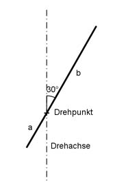
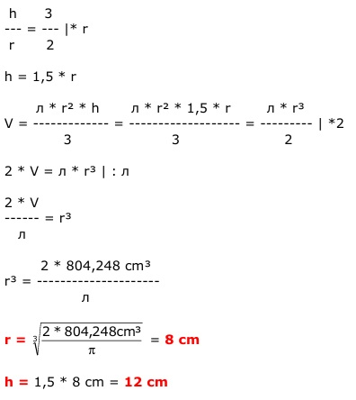
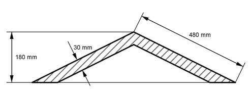
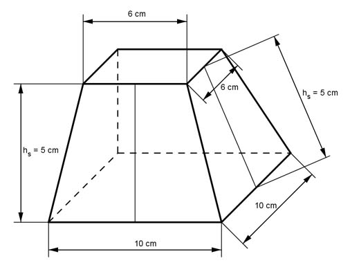
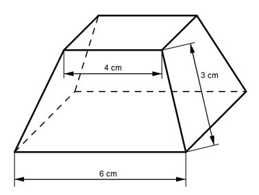
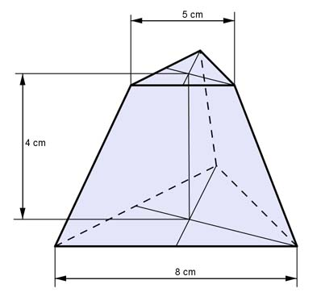
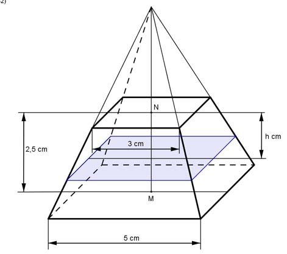
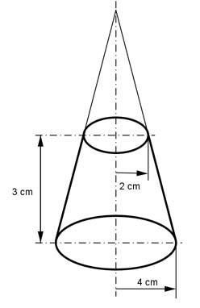
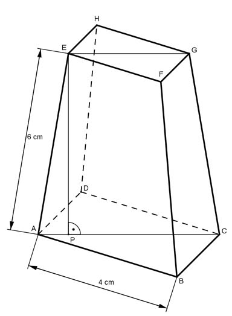
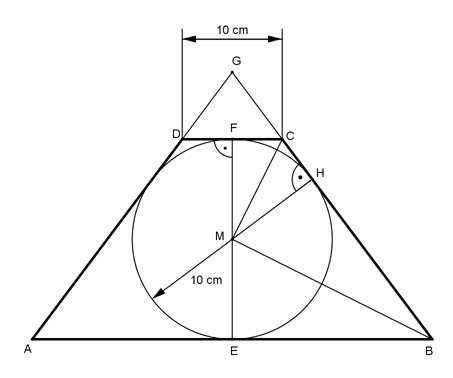

Aufgabe 182
Der Sportplatz wird erneuert. Die 6 m breite Laufbahn kostet
45 € pro m², der Rasen 15 € pro m², das Verlegen weitere
3,75 € pro m².
Wie hoch ist der Gesamtpreis?
 Er beträgt €
Er beträgt €
Wie löse ich Matheaufgaben?
Volumen
Aufgabe 171 Wie groß ist das Volumen V einer Pyramide mit einer Grundfläche von 25 cm² und einer Höhe von 7 cm?
Aufgabe 172 Wie groß ist das Volumen V einer quadratischen Pyramide mit einer Grundseite von 8 cm und einer Höhe von 13 cm? V = cm3
Aufgabe 173 Wie groß ist das Volumen V eines Kegels mit einem Radius des Grundkreises von 10 cm und einer Höhe von 15 cm?
Aufgabe 174 Wie groß ist das Volumen V einer quadratischen Pyramide mit einer Grundseite von 8,4 cm und einer Höhe von 7,2 m? V = cm3
Aufgabe 175 Ein Kegel hat ein Volumen V von 85,1 cm³ und einen Grundkreisradius r von 4,2 cm. Wie groß ist seine Höhe h?
Aufgabe 176 Ein Kegel hat ein Volumen V von 67,8 cm³ und eine Höhe h von 5,6 cm. Wie groß ist sein Grundkreisradius r? r = cm
Aufgabe 177 Ein Kegel hat ein Volumen V von 24,2 cm³ und eine Grundfläche G von 12,3 cm². Wie groß sind seine Höhe h und sein Grundkreisradius r?
Aufgabe 178 Eine quadratische Pyramide hat ein Volumen V von 135,7 mm3 und eine Höhe h von 6,9 mm. Wie groß ist ihre Grundseite a? a = mm
Aufgabe 179 Eine quadratische Pyramide hat ein Volumen V von 76,5 cm3 und eine Grundseite a von 4,2 cm. Wie groß ist ihre Höhe h?
Aufgabe 180 Eine Pyramide hat ein Volumen V von 101,25 cm3 und eine Grundfläche G von 56,25 cm². Wie groß ist ihre Höhe h? h = cm
Aufgabe 181 Eine Gemeinde will einen Platz mit 10 000 Blumen bepflanzen und zwar mit 50 Blumen pro m². Ein Gärtner will dafür eine kreisrunde, ein anderer eine quadratische Fläche anlegen. Um die Fläche soll jeweils ein 1 m breiter Weg verlaufen. Wie groß ist die Wegfläche um den Kreis? Um das Quadrat?
Aufgabe 182 Der Sportplatz wird erneuert. Die 6 m breite Laufbahn kostet 45 € pro m², der Rasen 15 € pro m², das Verlegen weitere 3,75 € pro m². Wie hoch ist der Gesamtpreis?
Aufgabe 183 Die Fahrbahn eines Kreisverkehrs ist innen 200 m und außen 300 m lang. Wie groß ist ihre Fläche?
Aufgabe 184 Die Einzäunung einer Fläche von 700 m² kostet 80 € pro laufenden Meter. Wie viel kostet der Zaun, wenn die Fläche rechteckig ist und 35 m lang? Kosten = € Wie viel kostet er, wenn die Fläche quadratisch ist?
Aufgabe 185 In einem Zelt haben 2 400 Personen Platz. Welchen Durchmesser muss das Zelt haben, wenn auf einem m² maximal 3 Personen stehen sollen?
Aufgabe 186 Das Vorderrad eines Traktors hat einen Durchmesser von 95 cm, das Hinterrad einen von 155 cm. Wie weit hat sich der Traktor bei einer Umdrehung des Vorderrades bewegt? Es sind cm Das Vorderrad macht 60 Umdrehungen, wie viele macht das Hinterrad?
Aufgabe 187 34 Kinder fassen sich an den Händen (von Hand zu Hand 1,3 m), um einen Baumstamm zu umfassen. Welchen Durchmesser hat er?
Aufgabe 188 Der Sportplatz soll erneuert werden. 2 Angebote liegen vor. Angebot 1: Angebot 2: Kunstrasen 34 €/m² Kunstrasen 45,60 €/m² Erdarbeiten 16 €/m² Erdarbeiten 18,75 €/m² Rasen verlegen 4,45 €/m² Rasen verlegen 6,25 €/m² Laufbahn 42 €/m² Laufbahn 88 €/m² Arbeitskosten 6,30 €/m² Erdarbeiten 15,80 €/m² ohne mit MWSt von 19% Wie teuer ist das günstigere Angebot?  Es sind €
Aufgabe 189 Das Becken wird neu gefliest. Wie viel m² Fliesen braucht man? Ein m² Fliesen kostet 24,55 €, das Verlegen 8 €/m². Wie hoch sind die Kosten einschließlich Mehrwertsteuer, wenn noch 10% Prozent für Verschnitt berücksichtigt werden?

Aufgabe 190 Ein Gartenplaner macht den dargestellten Vorschlag.
Wie viel Platz braucht er dafür? Er braucht m³ Wie viel Steine braucht man für die Wege und Umrandung bei 55 Steinen/m²? Wie groß ist die Blumenbepflanzung? Wie viel g Grassamen braucht man bei benötigten 15 g/m²? Der Teich in der Mitte ist 60 cm tief und ist bis 5 cm unter der Oberkante gefüllt. Wie viel m³ Wasser sind nötig?
Aufgabe 191 Sie wollen das Gartenhaus bauen. Wie viel Meter Holzbalken brauchen Sie, wenn die Dicke vernachlässigt und mit einem Verschnitt von 8% gerechnet werden soll? Wieviel kostet das Holz, wenn 8 cm * 8 cm Balken verwendet werden und der m³ 218,65 € kostet? Auf das 3 cm dicke Dach soll Teerpappe verlegt werden. Wie teuer wird es bei einem Verschnitt von 5%, wenn das Holz 228,75 €/m³ kostet und die Pappe 0,68 €/m²? Für die Außenverkleidung verwenden Sie Bretter, die pro m² 9,96 € kosten. Wie teuer ist die Verkleidung bei 5% Verschnitt?

Aufgabe 192 Wie viel m wäre der Erdumfang länger, wenn der Erdradius (6 370 km) um 1 m größer wäre? Es wären m Um wie viel m müsste der Erdradius vergrößert werden, wenn der Umfang um 1 km größer werden soll?
Aufgabe 193 Das Hinterrad eines Fahrrades hat einen Durchmesser von 80 cm. Das Kettenrad vorne hat doppelt so viel Zähne wie hinten. Wie oft muss ein Pedal getreten werden, um 1 km zurückzulegen? Welche Geschwindigkeit erzielt man, wenn pro s ein Pedaltritt erfolgt?
Aufgabe 194 Berechnen Sie die Kontrollabstände AD, AE, CE, AG und CH der Bohrschablone.
CE = mm
Aufgabe 195 Sie sollen aus einem 58 cm langen Draht ein Rechteck biegen, dessen eine Seite 6 cm länger ist als die andere. Wie lang ist die kürzere Seite?
Aufgabe 196 Ein rechteckiger Platz mit einer Diagonalen von 115 m und einer Fläche von 6 000 m² wird umzäunt. Welche Holzmenge ist erforderlich, wenn für den laufenden Meter 0,25 m² Holz gebraucht werden? Holzmenge = m³ Wie groß ist die längere Rechteckseite?
Aufgabe 197 Um welchen Betrag verlängert sich das Gelenksystem, wenn a auf ein Drittel verkürzt wird?

Aufgabe 198 Ein rechteckiger Bilderrahmen mit den äußeren Abmessungen 64 cm * 92 cm ist aus Holzleisten zusammengesetzt. An den Ecken ist unter 45° ein 3,54 cm langer Gehrungsschnitt nötig. Wie groß sind die innere Rahmenfläche A und die Breite b der Leisten? b = cm
Aufgabe 199 Wie groß ist a, wenn sich die Fläche des Rechtecks um ein Drittel verringern soll?

Aufgabe 200 Aus einem quadratischen Blech mit der Seitenlänge 6 cm soll eine Raute ausgeschnitten werden, dessen eine Diagonale so groß ist wie die Diagonale des Quadrates, die andere halb so lang. Wie groß sind der Blechverlust V und die Seitenlänge b der Raute? V = cm²
Aufgabe 201 Wie groß ist der Schnittverlust für 100 Bleche, wenn das fertige Teil aus einem 32 mm * 46 mm großen Blech hergestellt wird? 
Aufgabe 202 Wie groß sind der Querschnitt A des Kanals und die Länge a?
A = m²
Aufgabe 203 Wie groß sind a und b und der in der Nut freibleibende Querschnitt A?

Aufgabe 204 Ein Brunnen hat als Grundfläche ein regelmäßiges Achteck von 15,4 m². Wie groß ist eine Seite s des Achtecks? s = m
Aufgabe 205 Eine regelmäßige Sechsecksäule mit einer Seitenlänge von 32 cm steht auf einem zylindrischen Sockel. Wie groß ist dessen Durchmesser d, wenn er beidseits 6 cm über die längere Sechseckdiagonale hinausragt?
Aufgabe 206 Der Boden eines Gefäßes wird von einem regelmäßigen Zehneck mit einem Umfang von 20 cm gebildet. Wie groß ist dessen Umkreisradius r? r = cm
Aufgabe 207 Das zu groß geratene Blech (regelmäßiges Fünfeck) wird so bearbeitet, dass parallel zu den Seiten Streifen von 5 mm wegfallen. Wie groß sind die Fläche A und die Seitenlänge s des neuen Fünfecks?

Aufgabe 208 Ein Dreikantstahl (A = 8 cm²) soll parallel zu einer Seite auf 5 cm² abgefräst werden. Welche Frästiefe a muss gewählt werden, wenn ein regelmäßiges Dreieck erhalten bleiben soll? a = cm
Aufgabe 209 Die Grundflächen eines dreistöckigen Pavillons sind regelmäßige Sechsecke. Wie groß sind die Seiten der nächsten Etagen, wenn die Grundseite 3 m beträgt und die Sechsecke jeweils 0,5 m zurückspringen?
Aufgabe 210 Der Umfang einer Weide in Form eines regelmäßigen Zehn ecks beträgt 45 m. Wie groß ist ihre Fläche A? A = m²
Aufgabe 211 Ein Museum hat ein Seitenfenster in Form eines regelmäßigen Sechsecks. Seine Randeinfassung besteht aus Holzleisten mit einer Breite von 5 cm und einem äußeren Umfang von 3 m. Wie groß ist die Fläche A für den Lichteinfall?
Aufgabe 212 Aus einem quadratischen Blech mit einer Seitenlänge von 16 cm soll an den Ecken ein Achteck geschnitten werden. Wie groß ist dessen Fläche A? A = cm²
Aufgabe 213 Aus 12 regelmäßigen Sechseckblechen sollen 12 Dreiecke mit größtmöglicher Seitenlänge entstehen. Wie groß ist der Schnittverlust V, wenn eine Sechseckseite 14,5 cm lang ist?
Aufgabe 214 Als Stützen für einen Vorbau sind regelmäßige Zehneck- säulen vorgesehen. Wie groß ist eine Seite a der Säule, wenn der Abstand der parallelen Seiten 45 cm sein muss? s = cm
Aufgabe 215 Aus einem runden Stamm mit einem Durchmesser von 56 cm soll ein Sechseck mit geringstmöglichem Verlust geschnitten werden. Wie groß ist der Umfang U des Sechsecks?
Aufgabe 216 Ein Kupferdraht von 2 mm² soll durch einen mit dreifachem Querschnitt ersetzt werden. Welchen Durchmesser d hat der neue Draht? d = mm
Aufgabe 217 Das Rad eines Pkw muss sich 400 mal drehen, damit es 1 km zurücklegt. Welchen Durchmesser d hat es?
Aufgabe 218 Ein Autoreifen hat einen Außendurchmesser von 92 cm. Wie viel Umdrehungen muss er auf einen km mehr machen, wenn er auf 88 cm zurückgegangen ist? n = Umdrehungen
Aufgabe 219 Aus einem Blech von 35 cm Breite soll ein Rohr mit einer lichten Weite von 10 cm gebogen werden. Um wie viel cm steht der Rand über?
Aufgabe 220 Ein Rohr soll stündlich 500 m³ Wasser mit einer Geschwindig- keit von 0,11 m/s fördern. Wie groß muss der Innendurchmesser d des Rohres sein? d = m
Aufgabe 221 Ein Rohr soll bei gleichem Querschnitt 2 Rohre von 24 cm und 38 cm Durchmesser ersetzen. Wie groß muss sein Durchmesser d sein?
Aufgabe 222 Ein Fahrzeug hat Vorderräder mit einem Durchmesser von 32 cm und Hinterräder mit einem von 38 cm. Wie viel Umdrehungen müssen die Vorderräder auf einer Strecke von 8,4 km mehr machen? n = Umdrehungen
Aufgabe 223 Eine Welle hat einen Umfang von 21 cm. Wie groß ist ihre Fläche A und ihr neuer Umfang U, nachdem 0,5 cm abgedreht wurden?
Aufgabe 224 Wie groß ist der Schnittverlust V?  V = mm²
Aufgabe 225 Wie groß ist die Seite a der quadratischen Aussparung, wenn sich der Querschnitt der Welle halbieren soll? 
Aufgabe 226 Ein Rohr hat eine Wanddicke von 14 mm und einen lichten Durchmesser von 75 mm. Wie groß ist die Materialfläche A? A = mm²
Aufgabe 227 Ein kreisringförmiger gemauerter Brunnen hat einen äußerenUmfang von 9,5 m und einen inneren von 7,2 m. Wie groß ist die Fläche A des Mauerwerks?
Aufgabe 228 Eine Welle von 84 mm soll auf die Hälfte seiner Fläche aufgebohrt werden. Wie groß ist der Bohrungsdurchmesser d? d = mm
Aufgabe 229 Über einen Vierkantstahl mit einer Seitenlänge von 31 mm soll eine zylindrische Hülse mit einem äußeren Umfang von 150 mm geschoben werden. Wie groß ist die Wanddicke a der Hülse?
Aufgabe 230 Wie groß ist die Fläche A der Schelle? Die Laschen seien Rechtecke.  A = mm²
Aufgabe 231 Aus einem Blech von 1,5 m Länge und 3 cm Breite sollen Ringe mit 24 mm Außen- und 12 mm Innendurchmesser ausgestanzt werden. Wie groß ist der Abfall A, wenn zwischen den Ringen und am Anfang und Ende ein Abstand von 3 mm eingehalten werden soll?
Aufgabe 232 Wie groß ist die gestreckte Länge l des Rohrbogens?  l = m
Aufgabe 233 Wie groß ist der Durchflussquerschnitt A des Kanalrohrs? 
Aufgabe 234 Wie groß ist der Materialbedarf A für die 4 Lamellen?  A = mm²
Aufgabe 235 In welcher Höhe h steht das Wasser in der Tonne, wenn sie zu 2/3 gefüllt ist, und wie lang ist die Sehne s?

Aufgabe 236 Die Welle ist oben auf eine Breite von 20 mm abgefräst. Berechnen Sie die Einstelltiefe t des Fräsers.
t = mm
Aufgabe 237 Aus einer Scheibe mit einem Durchmesser von 67 mm soll ein Kreissektor so ausgeschnitten werden, dass der Umfang auf einer Bogenlänge von 51 mm unterbrochen wird. Wie groß ist der Mittelpunktswinkel α?
Aufgabe 238 Berechnen Sie das Maß a des dargestellten Bremsklotzes.  a = mm
Aufgabe 239 Eine Bremstrommel hat einen Durchmesser von 250 mm. Das Bremsband berührt den Umfang der Trommel auf einer Länge von 540 mm. Wie groß ist der Umschlingungswinkel α?
Aufgabe 240 Die dargestellte Lehre ist aus einer Scheibe von 76 mm Durch- messer herausgearbeitet worden. Wie groß ist der Blechabfall A?  A = mm²